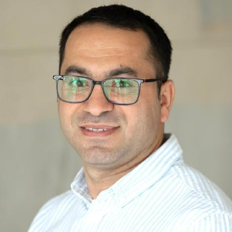

Welcome to my personal website
I am pursuing a PhD in Sociology at the University of Essex, UK. My research explores the impact of female members of parliament on women-friendly policies addressing domestic violence, reproductive rights and health, early marriage, and parental leave.
My research interests include women's political representation, gender and public policy, and gender equality policies.
Before embarking on my PhD studies in 2023, I worked for nearly a decade as a civil servant at the State Committee for Family, Women and Children Affairs, Republic of Azerbaijan. During this time, I held various positions, including senior adviser, assistant to the Chairperson, and head of the International Relations Department.
I have extensive professional experience in developing women and child-friendly policies and programmes addressing a wide range of issues aimed at strengthening the protection of women's and children's rights.
From 2021 to 2023, I served as a member of the Gender Equality Commission of the Council of Europe. I also acted as the Resident Twinning Adviser Counterpart for a project to strengthen referral mechanisms to provide safety and support for victims of domestic violence in Azerbaijan.
I recently completed a Postgraduate Certificate in Higher Education Practice (Module 1) and gained professional recognition as a Fellow of the Higher Education Academy (FHEA). I hold an MA in International Politics (Globalization, Poverty and Development) from Newcastle University.
Publications
- Adilov, F. (2024). Analysis on how women's participation in parliament affects policies in favour of women, online (in Azerbaijani), Azertag News Agency [Accessed 23 May 2025]
- Adilov, F. and Nadirov, O. (2020). 'How does the number of women in Parliament impact the laws affecting women?' [Accessed 11 May 2020]
- Adilov, F. (2020). 'Children Rights, Legislation and Parental Responsibility: What Should We Know?' [Accessed 25 August 2020]
- Adilov, F. (2018). 'Do developed countries have a duty to assist the global poor?' [Accessed 24 October 2018]